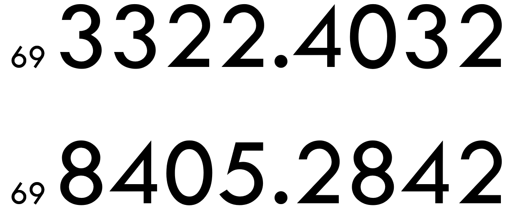
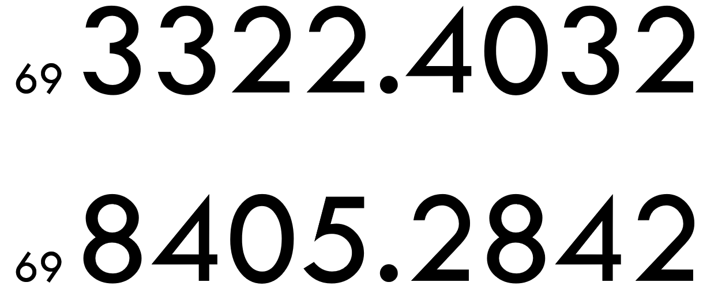

Playstation: Consoles
Playstation 1 - プレイステーション
| settings_input_componentA/V Input | wifi_off No WIFI |
O PlayStation, frequentemente chamado de PlayStation 1 ou ainda PSOne, foi o
primeiro console de vídeo game fabricado pela Sony, lançado em 3 de dezembro de 1994 no
Japão, 9 de setembro de 1995 nos Estados Unidos e em 29 de setembro de 1995 na Europa.
Desde o seu lançamento até 2006, quando sua produção foi cancelada, o PlayStation
vendeu
mais de 100 milhões de unidades. Ocupa a posição de segundo console de mesa mais vendido no
mundo, com mais de cem milhões de unidades vendidas, superado apenas pelo seu sucessor, o
PlayStation 2, que teve mais de 150 milhões de unidades comercializadas.
Playstation 2 - プレイステーション2
| settings_input_componentA/V Input | wifi_off No WIFI | usb USB |
| languageNavegador | archiveHard Storage | translatePt Language |
O PlayStation 2 (oficialmente abreviado como PS2) foi o segundo console produzido pela
empresa Sony, após o PlayStation original. Foi lançado no dia 4 de março de 2000 no Japão,
no dia 26 de outubro na América do Norte, e posteriormente, no dia 24 de novembro na Europa
e 3 de dezembro no Brasil. Após um lento primeiro ano, o PlayStation 2 cresceu a ponto de
tornar-se o console mais vendido da história dos videogames.
Devido à imensa popularidade em todo o mundo, o console, assim como seus jogos,
continuaram
a ser fabricados mesmo após o lançamento do seu sucessor, o PlayStation 3. Somente depois
de 13 anos do seu lançamento, às vias do anúncio do PlayStation 4, que o jornal japonês
Asahi Shimbun anunciou o encerramento da fabricação do console no Japão no dia 30 de
dezembro de 2012. E no dia 4 de janeiro de 2013, o jornal britânico The Guardian anunciou
que a Sony cessou a produção dos consoles PlayStation 2 no mundo inteiro.
O último jogo lançado para Playstation 2 foi Pro Evolution Soccer 2014 em 8 de
novembro de
2013.
De acordo com dados provenientes da Sony de 31 de janeiro de 2011, o PlayStation 2
vendeu
mais de 154 milhões de unidades, e teve mais de 3800 títulos disponíveis.
Playstation 3 - プレイステーション3
| settings_input_componentA/V Input | bluetoothBluetooth | accessibility_newAccessibility |
| languageNavegador | network_wifiWIFI | speaker_phoneCelphone Conectivy |
| usb USB | translatePt Language | archiveHard Storage |
O PlayStation 3 (oficialmente abreviada como PS3) é um console de videogames desenvolvido
pela Sony Computer
Entertainment. É o sucessor do PlayStation 2 e faz parte da marca PlayStation de consoles.
Foi lançado em 11 de novembro de 2006, no Japão, 17 de novembro de 2006 na América do Norte
e em 23 de março de 2007 na Europa e na Austrália. O PlayStation 3 compete principalmente
contra consoles como o Xbox 360 da Microsoft e o Wii da Nintendo como parte da sétima
geração de consoles de videogames.
O console foi anunciado oficialmente pela primeira vez na edição de 2005 da E3 e foi
lançado no final de 2006. Foi o primeiro console a usar o disco Blu-ray como seu meio de
armazenamento primário. O console foi o primeiro da série PlayStation a integrar os
serviços de jogos sociais, incluindo ser o primeiro a apresentar o serviço de jogos sociais
da Sony, a PlayStation Network, e a sua conectividade remota com o PlayStation Portable e
PlayStation Vita, sendo capaz de controlar remotamente os dispositivos. Em setembro de
2009, o modelo Slim do PlayStation 3 foi lançado. Foi removida a capacidade de hardware
para executar os jogos do PlayStation 2. Era mais leve e mais fino do que a versão
original, e apresentava um logotipo redesenhado e design de marketing, bem como uma pequena
mudança de start-up no software. Um novo modelo denominado Super Slim foi lançado no final
de 2012, refinando e redesenhando o console.
O sistema teve um início com vendas ruins no mercado, porém conseguiu se recuperar,
especialmente após a introdução do modelo Slim. O seu sucessor, o PlayStation 4, foi
lançado em 15 de novembro de 2013. Em 29 de setembro de 2015, a Sony confirmou que a
produção de novos consoles iriam ser descontinuadas na Nova Zelândia, porém o sistema
permaneceu em produção em outros mercados. A fabricação de novas unidades nos Estados
Unidos terminou em outubro de 2016. Em 2017, o Japão foi o último território em que novas
unidades ainda estavam sendo produzidas até 29 de maio de 2017, quando a Sony confirmou que
o PlayStation 3 era descontinuado no Japão.
Playstation 4 - プレイステーション4
| bluetoothBluetooth | accessibility_newAccessibility | archiveWIFI |
| touch_appTouch | languageNavegador | 4k4K Suport |
| usb USB | translatePt Language | network_wifiWIFI |
| speaker_phoneCelphone Conectivy |
O PlayStation 4 (oficialmente abreviada como PS4) é um console de videojogos
produzida pela Sony Interactive Entertainment, sucessor do PlayStation 3 e o quarto
aparelho da série PlayStation. Foi anunciada em Fevereiro de 2013 durante uma conferência
de imprensa da Sony em Nova Iorque, num evento conhecido como "PlayStation Meeting 2013"
que tinha como objetivo descobrir "O Futuro da PlayStation". Foi lançada na América do
Norte a 15 de Novembro de 2013, na Europa e América do Sul a 29 de Novembro de 2013 e no
Japão a 22 de Fevereiro de 2014. A PlayStation 4 é a primeira consola da Sony a ser
oficialmente e legalmente editada na China desde a PlayStation 2, depois do levantamento da
proibição que durou 14 anos. O PlayStation 4 compete diretamente com o Wii U da Nintendo e
com o Xbox One da Microsoft, como um dos consoles da oitava geração.
O console permite vários métodos de interatividade com outros serviços e aparelhos
incluindo:
O PlayStation App, uma aplicação que melhora e expande a interatividade com o console
usando aparelhos iOS e Android; o Remote Play, que permite ligar o PlayStation 4 à
distância para continuar a jogar num segundo ecrã via PlayStation Vita ou dispositivos
Xperia;
O PlayStation Now, um serviço de computação em nuvem baseado em Gaikai, que oferece
videojogos e outros conteúdos em stream. Pela incorporação de um botão de partilha (SHARE)
no novo comando, o DualShock 4, faz com que seja possível exibir conteúdo que está a ser
jogado e transmitido ao vivo aos amigos, ou mesmo partilhar jogos através da característica
‘Share Play’, desta maneira a Sony planeia colocar assim mais foco nos aspectos sociais da
consola.
Foi muito bem recebida pelos críticos e pelos consumidores com as análises a
destacarem o design, o novo DualShock 4 e o hardware. As críticas recaíram sobretudo sobre
o pequeno número e a qualidade de jogos disponíveis no lançamento que, apesar do preço
competitivo, foram um fraco incentivo para comprar o console. Como um sucesso comercial, o
PlayStation 4 vendeu um total de mais de um milhão de unidades nas primeiras 24 horas e,
até julho de 2018, já tinham sido vendidas mundialmente mais de 81 milhões de unidades.
Em setembro de 2016, a Sony revelou dois novos sistemas, revisões do hardware da
PlayStation 4: a versão “slim”, que corresponde a um design menor do sistema original; e a
versão "Pro", com uma GPU melhorada e a CPU com frequência de clock aumentada para
suportar jogos na resolução 4K.